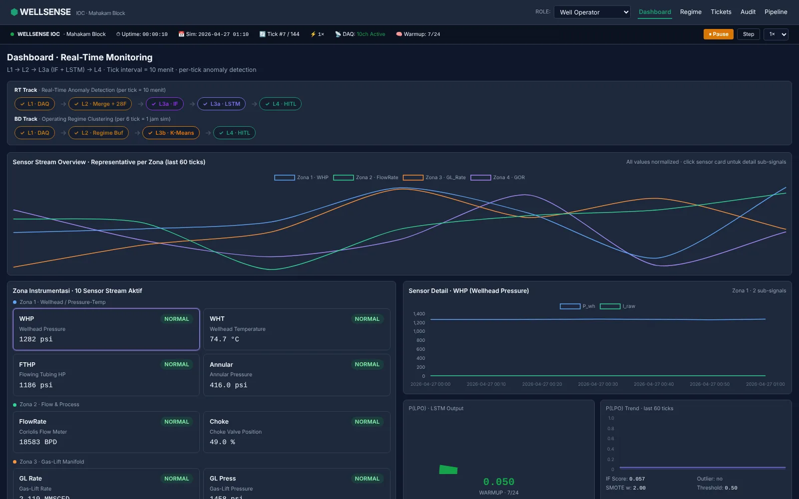

W-01 · IOC Digital Hackathon AI/ML Hulu Migas 2026
Wellsense
Prototipe deteksi dini anomali sumur minyak lepas pantai. Dibangun lima mahasiswa untuk hackathon SKK Migas, lengkap dengan simulasi yang bisa dicoba langsung di browser.
- Rp73,5 jt
- potensi kerugian per jam pada sumur gas-lift 1.500 BOPD
- 31,17%
- variabel sensor hilang/rusak dari 15.872